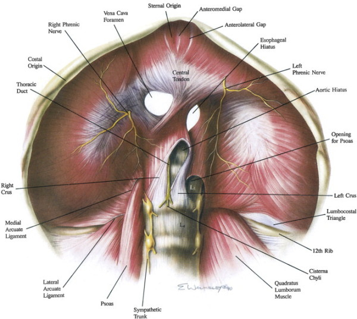

Ruptured diaphragm
Anatomy
Diaphragm
embryonically derived from four sources:
- transverse septum, mediastinum, pleuroperitoneal membranes, body
wall muscles
- surrounding muscles insert into central tendon
Phrenic nerves branch just above diaphragm, vary in size and
thickness,
- commonly see anterior, lateral and posteromedial (largest)
branching; enter muscle and run obliquely
- then pass
to undersurface of diaphragm and branch to deliver nerves to the
diaphragm,
- right lateral branches are short and thick and pass posterior to
cava
- left lateral branches are long and thin and head toward left
hiatal margin

Epidemiology
3-4% of major blunt abdo trauma, but only 25% diagnosed on initial CXR
Penetrating
injury
· Penetrating
injuries: any penetrating injury below the level of 4th
rib or below the line of nipple is associated with
risk of diaphragmatic rupture.
· Stab: 15% risk of
abdominal visceral involvement; GSW: 45% risk of abdominal
visceral involvement
· Penetrating injury
has small holes
Associated with penetrating injury to any other nearby
structures
· 50% have a normal
CXR on presentation
· CT scan is not
reliable unless there is obvious herniation of abdominal viscera
into chest
For a patient with
penetrating thoracic injury use DPL:
· Positive: DPL
fluid comes out of chest, RBC count of >10,000 mm3
is positive -
laparotomy
· Equivocal: RBC
count <10,000 and >1000: thoracoscopy or laparoscopy
· Negative: RBC
count <1000/mm3
· In situation where
not clinically apparent, not an emergency
· MR scanning
probably best test @ later date
· Important to detect
small diaphragmatic lacerations as herniation carries risk of
bowel strangulation.
Blunt trauma
· Usually ruptures
through the vertebrocostal triangle where the lateral arcuate
ligament does not reach the 12th rib.
· Less common for
late presentations.
Associated with other injuries:
- pulmonary contusion, rib #, thoracic trauma, spleen, liver,
pancreas injury
Incidence of
intestinal strangulation in these lesions is up to 20%
- during respiration, intrapleural pressure fluctuates from -5
to -10, intra-abdominal pressure from +2 to +10
--> hence strong pressure gradient promotes herniation
Grading
I Contusion
II Laceration <2cm
III Laceration 2-10cm
IV Laceration >10cm with little tissue loss (<2.5cm2)
V Laceration with
tissue loss >2.5cm2
Clinical Manifestations
Include audible
bowel sounds in lower chest
- unilateral absence of breath sounds, respiratory distress and
scaphoid abdomen
But typically actually nothing much in acute setting ~50%
Early CXR often misses it (30-60% on left, 15% on right where liver herniates)
In a ventilated
patient, positive pressure may reduce herniation, making
detection difficult
CT has a high sensitivity (70%+) and excellent specificity.
- may show the defect, or intrathoracic abdominal contents
Difficult to detect on thoracic trauma USS
Repair
1. Avoid entrapment of nerves as described above, if at all
possible
- may be difficult with radial injuries at central tendon, vena
cava foramen or esophageal hiatus.
2. Conduct normal truma laparotomy evaluating for concomitant
injuries, priorities being haemorrhage and contamination control
3. Carefully reduce any contained herniation contents
- may need to pass a catheter alongside the contents to remove
the vacuum effect
- may need to extend the phrenotomy
4. Exposure
- may need to divide the lienophrenic ligament and splenic
flexure inferiorly to expose the left diaphgram
--> moves spleen stomach, colon away, using hand to push
down.
- mobilise left lateral segments of the liver medially to expose
the central tendon and gastric hiatus
- right side buttressed by the lier; mobilisation of falciform
will aid inspection, triangular ligament only taken down if
injury clear
- and division of the right triangular ligament and posterior
hepatic attachment will help liver be pulled inferiorly providin
exposure to the right diaphragm (and IVC, adrenal, kidney).
5. Repair
- Allis clamps used to siolate the edges of the tear and enable
manipulation
- Close with interrupted 0 nylon figure 8 stitches, including
viable dissue and excluding / (debriding first) nonviable tissue
- Tail of the previous suture left long as a handle.
If repair is tenuous?
Pledgets and horizontal mattress sutures can help.
Removing pneumothorax
Pass a 24Fr drain
through the last stitch and aspirate prior to pulling tight.
- any doubt, place a chest drain
Large wound /
defect
Place a bridging nonporous biological mesh material e.g. pig
dermis product (or GoreTex)
Avulsed from ribs
Reattach 1-2 ribs higher to repair without tension.